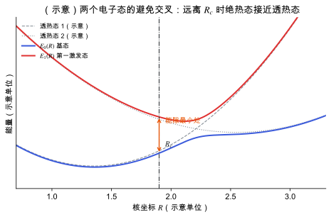

多电子问题与 Born–Oppenheimer 近似
电子与核运动分离，得到势能面：结构、振动、分子动力学和机器学习势都定义在势能面上，这个近似的适用边界决定了它们什么时候会失效。
直观阅读需要
- 原子核比电子重得多
- 变分原理：基态能量是变分下界
完整推导还需要
- Hartree–Fock 方法 与 Kohn–Sham 密度泛函理论：电子问题怎么解
- 微扰理论与线性响应：微扰展开
只是提示，不需要先读完才能往下看。
直觉直观解释
一个分子或晶体里，原子核比电子重至少约 1836 倍（质子对电子）。同样大小的动量下，核的速度慢得多。于是可以想象：核慢慢移动时，电子几乎立刻调整到当前核构型下的平衡状态。电子给核提供一个有效势能面 (potential energy surface, PES)，核在这个面上运动。
这就是 Born–Oppenheimer 近似 [Born & Oppenheimer 1927]。它把“电子 + 核”的耦合问题拆成两层：
- 固定核构型 \mathbf R，解电子本征值问题，得到电子能量 E_0(\mathbf R)；
- 把 E_0(\mathbf R) 当作核运动的势能，解核的薛定谔方程。
结构优化、声子、分子动力学、机器学习势，全部建立在这个图像上：它们都只在一个 PES 上工作。

| 符号 | 是什么 | 图里对应 |
|---|---|---|
| R | 核坐标（一个或多个） | 横轴 |
| E_0(R), E_1(R) | 电子基态与第一激发态的绝热能量 | 两条实线 |
| R_c | 两个电子态接近简并的位置 | 竖线 |
| 能隙 | E_1 - E_0，在 R_c 最小 | 两条实线的间距 |
| 透热曲线 | 不随核坐标交换身份的电子态 | 虚线 |
| 非绝热耦合 | 电子波函数随 R 变化引起的态间耦合 | 能隙越小越强 |
定义与公式数学与推导
完整哈密顿量
在原子单位下，电子与核的总哈密顿量是
其中 I,J 标记核，M_I 与 Z_I 是核的质量与电荷；i,j 标记电子；前两项是核与电子的动能；其余是电子–电子、电子–核、核–核库仑项。多电子问题就是这一堆耦合项 [Martin 2020]。
Born–Huang 展开
把总波函数按电子本征态展开：
其中 \phi_k(\mathbf r;\mathbf R) 是固定核构型下的第 k 个电子本征态；\chi_k(\mathbf R) 是对应的核波函数。代入总薛定谔方程，得到核的耦合方程：
其中 E_k(\mathbf R) 是第 k 个电子态的能量（对 k=0 就是基态势能面）；\hat\Lambda_{kl} 是非绝热耦合算符，来自核动能作用在 \phi_k 的 \mathbf R 依赖上，主要含一阶导数耦合 \mathbf d_{kl}(\mathbf R) = \langle \phi_k | \nabla_{\mathbf R} | \phi_l\rangle。
Born–Oppenheimer 近似
只保留 k=0 一项，丢掉 \hat\Lambda_{0l}，就得到
这就是“在基态势能面上运动”。误差的量级是 \sim m_e/M_I 乘以电子能隙的倒数：能隙大、核重时很好；能隙小、轻核（质子）时变差。
在本研究线里的样子对应与边界
- DFT 与 MLIP 的共同前提：Kohn–Sham 密度泛函理论 在每个核构型下解电子基态；机器学习势学的就是 E_0(\mathbf R) 及其导数（力 = -\nabla_{\mathbf R}E_0，见 Hellmann–Feynman 定理：力与应力）。如果训练数据里混入了不同电子态，模型会学到一个“平均”的、物理上不存在的 PES。
- 声子：声子与晶格动力学 是 E_0 对核位移的二阶导数；BO 不成立时，声子谱里的虚频可能反映真实的电子不稳定性，而不是数值问题。
- 分子晶体里的质子转移：质子归属：盐与共晶 讨论的盐–共晶与质子位置，常常涉及 O–H···O 这类强氢键。质子的零点能和隧穿不在 BO 的 1D PES 图像里；判断质子是否“定域”时，要区分电子势垒和核量子效应。
- MD 与构象：分子动力学 在单个 PES 上积分；光化学、激发态弛豫不能用同一套力场。
常见坑对应与边界
- 把 BO 近似和諧振近似混为一谈：BO 只要求电子跟随核，不要求势能是二次的；非谐、转动、大振幅运动都可以在单个 PES 上处理。
- 在近简并处用单 PES 算力：两个态交叉附近，绝热 PES 有尖点或不连续，力和 MD 都会出问题。
- 忽略核量子效应：BO 内质子仍是一个量子粒子；零点能、隧穿可以改变“哪个质子位置稳定”的结论。
- 把电子态混合的训练数据喂给 MLIP：同一个核构型对应不同电子态时，E(\mathbf R) 不是单值函数，模型会学错。
- 用基态 PES 解释激发态现象：光吸收、荧光、光化学循环需要至少两个 PES。
检验自己对应与边界
参考资料
论文Born & Oppenheimer 1927
M. Born, R. Oppenheimer, Zur Quantentheorie der Molekeln, Annalen der Physik 389, 457-484 (1927)
尚未实际查阅，目前只是拟查阅书目
教材Martin 2020
尚未实际查阅，目前只是拟查阅书目
分类量子力学 · 概念 · 状态：草稿